13
OCT · TUE
ARRIVE & UNPACK
우리 동네에서 놀고 청소해주기.
JFK 도착 → Manhattan Park → 저녁 식사 → 휴식
엄마, 할머니, 아빠와 함께.
내가 좋아하는 뉴욕을 소개합니다.
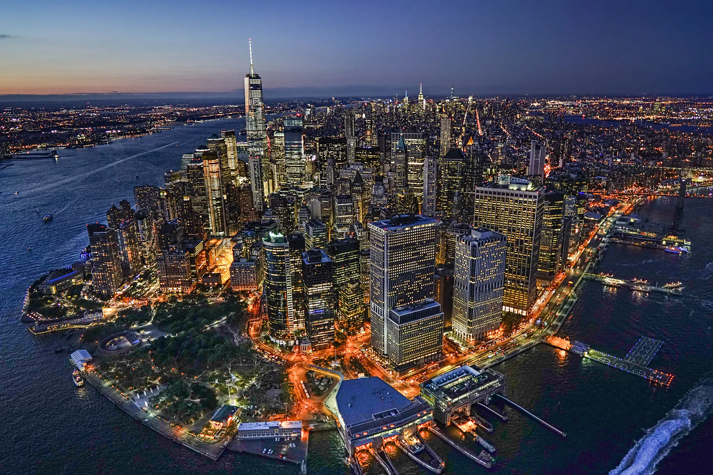
01 / TOUCHDOWN
공항에서 짐을 찾고, 우리 집으로!

John F. Kennedy Airport
Manhattan Park · Roosevelt Island
30 River Road, New York
짐이 있는 첫날은 차량 이동을 우선으로 생각하기. 집에 도착하면 짐 풀고, 가볍게 저녁 먹고 쉬기.
JFK → 우리 집 길찾기 ↗ 대중교통 경로도 보기 ↗차량 1대 계획 예산 $100–150 · 실제 요금은 출발 전 확인
02 / JUST US GIRLS
동네 구경하고, 맛있는 거 먹고, 중간중간 카페에서 쉬어가기.
ARRIVE & UNPACK
JFK 도착 → Manhattan Park → 저녁 식사 → 휴식
WEDNESDAY / DOWNTOWN DAY
SoHo → West Village → Parsons
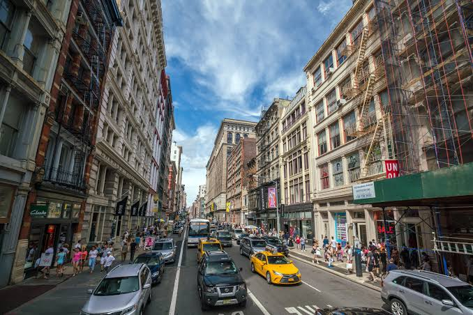
01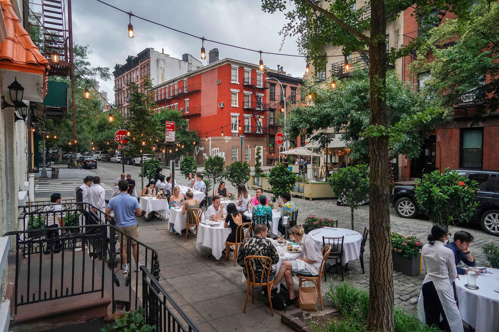
02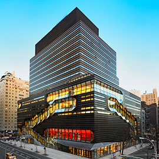
03☕ 중간에 카페 휴식 · 쇼핑은 각자 원하는 만큼
식비 + 시내 교통 계획 예산: $50–100 쇼핑 예산 400$/ 1인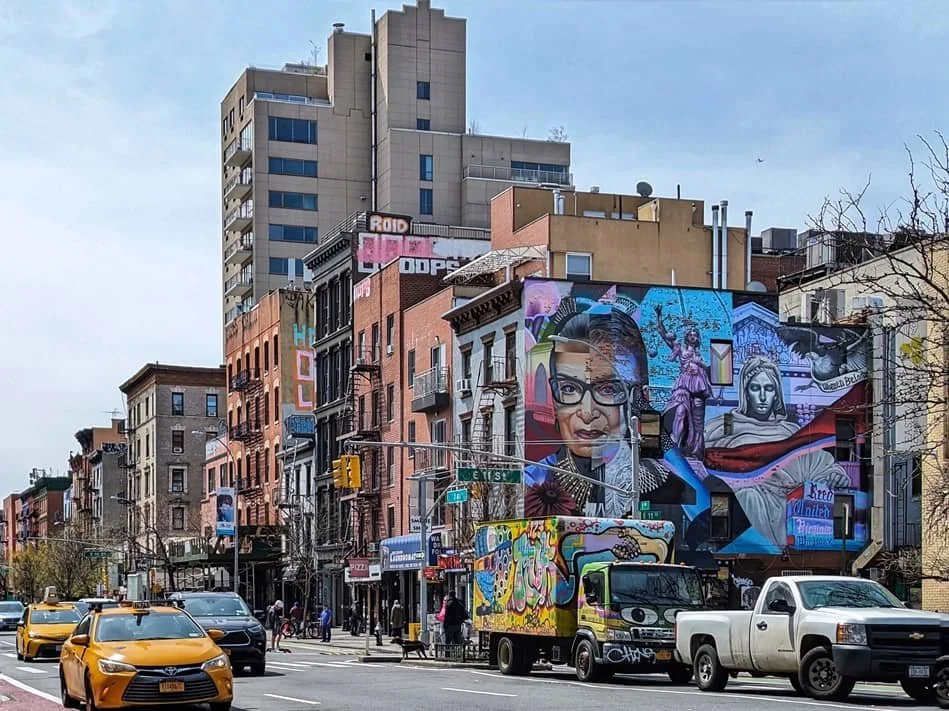
OCT 15 / THURSDAY
East Village에서 동네 구경과 점심. 중간에 충분히 쉬고, 저녁은 K-Town에서 맛있는 한식으로 마무리하기
식사 후보 · Raku / Kimura / 감미옥 / 토속촌
East Village → K-Town ↗$75–110 / 1인 · 식비 + 시내 교통 계획 예산
03 / THE WHOLE CREW
 THE CITY IS WIDE AWAKE.
THE CITY IS WIDE AWAKE.
아빠 도착 후 집에서 쉬었다가 함께 저녁. 컨디션이 괜찮으면 타임스 스퀘어에서 뉴욕의 야경 보기. 버스 탈 수 있으면 타기
Times Square 지도 ↗
$50–80 / 1인 · 식비 + 시내 교통
아빠 공항 이동 비용은 별도
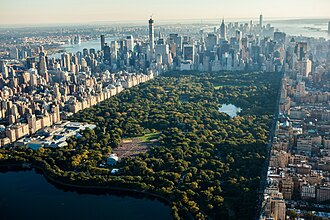
A SLOW SATURDAY IN THE PARK.Central Park에서 천천히 산책하고 사진 찍기. 점심 먹고 쉬었다가 5th Avenue와 Rockefeller Center 주변 구경.
$85–125 / 1인 · 식비 + 시내 교통
OCT 18 / THE GRAND FINALE
브루클린에서 가족사진, 그리고 물 위에서 보는 뉴욕.

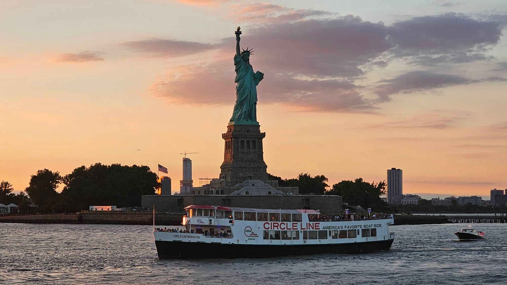
마지막 저녁은 크루즈에서. 예약할 상품의 출항 장소와 시간을 확인하기.
선착장·출항 시간은 예약 후 추가
식사 후보 · Peter Luger
윌리엄스버그에 있어 DUMBO와 별도 이동이 필요해요.
예약 시간과 크루즈 탑승 시간을 보고 결정하기.
비행 시간에 맞춰 마지막 식사 → 짐 챙기기 → JFK 이동
우리 집 → JFK 길찾기 ↗04 / THE MONEY PART
예약 전 참고할 계획용 예산 · USD 기준
| 날짜 | 1인 | 함께 쓰는 예산 |
|---|---|---|
| 10/13 · 도착 | $30–45 | 3인 · $90–135 |
| 10/14 · Downtown | $85–125 | 3인 · $255–375 |
| 10/15 · East Village | $75–110 | 3인 · $225–330 |
| 10/16 · Times Square | $50–80 | 4인 · $200–320 |
| 10/17 · Central Park | $85–125 | 4인 · $340–500 |
| 10/18 · Brooklyn + Cruise | $170–250 | 4인 · $680–1,000 |
| 10/19 · 출국 | $30–45 | 4인 · $120–180 |
05 / YEJI’S FOOD LIST
음식 종류를 눌러 맛집 후보를 골라보기.
아래 금액은 세금·팁을 감안해 배정한 1인 식사 예산임
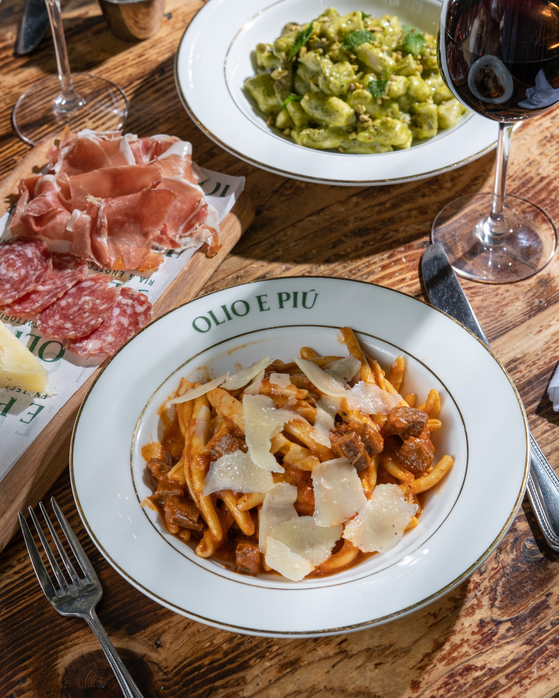
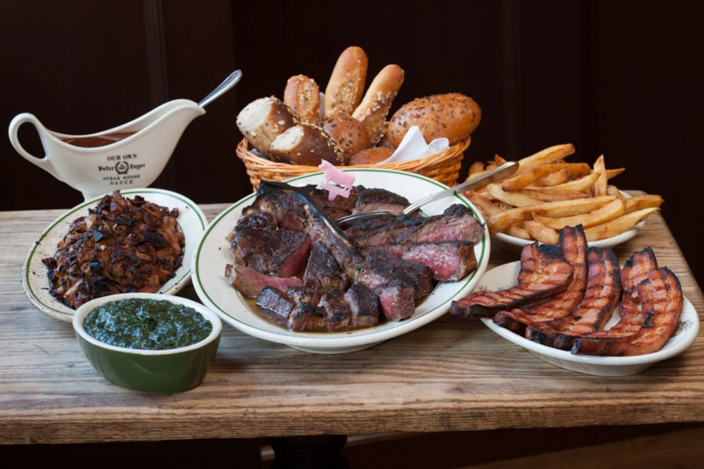
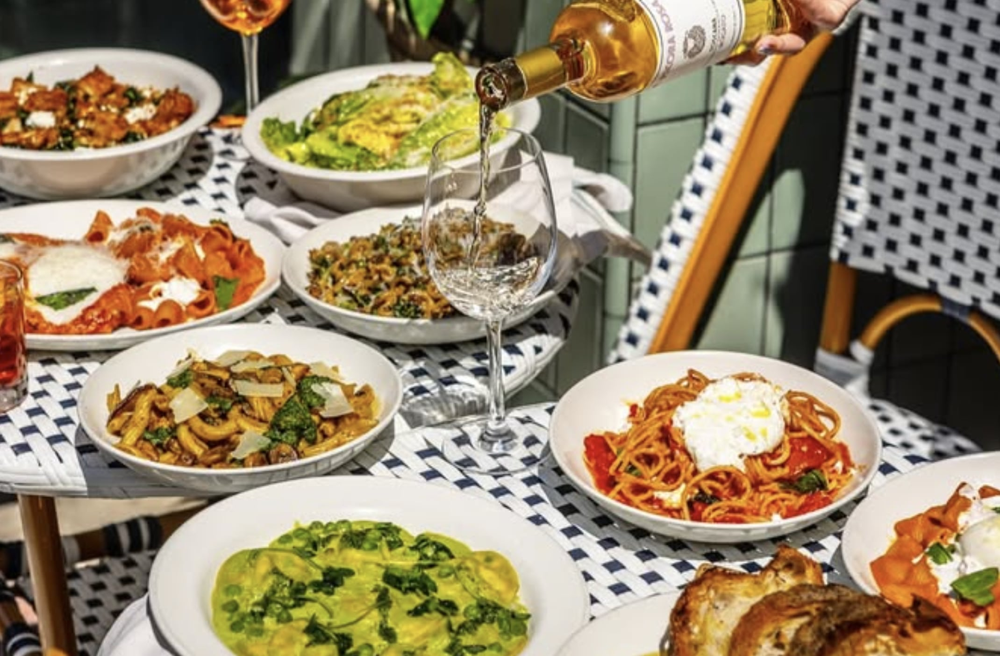
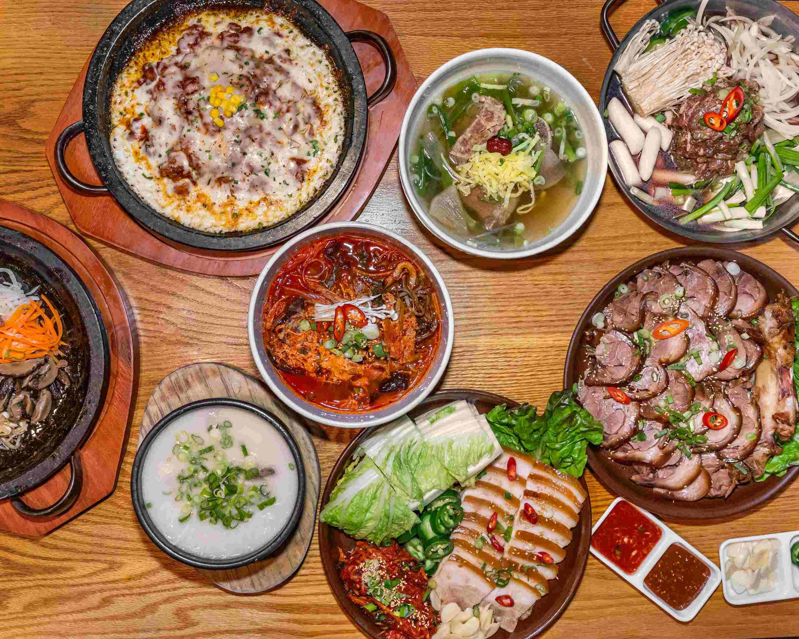
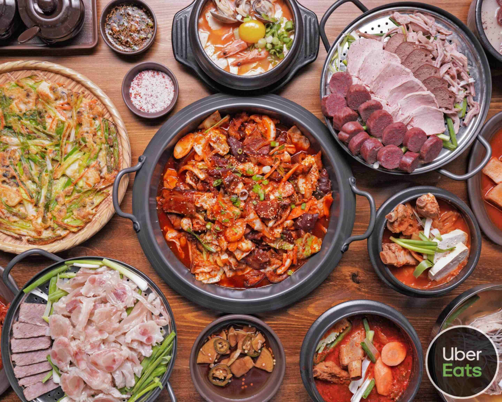
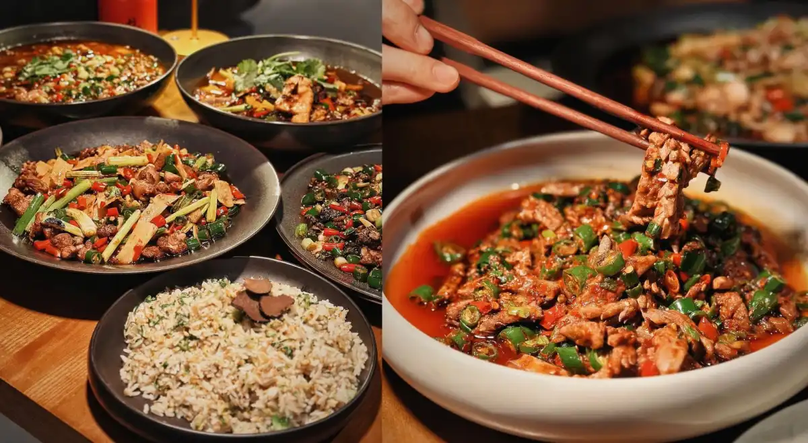
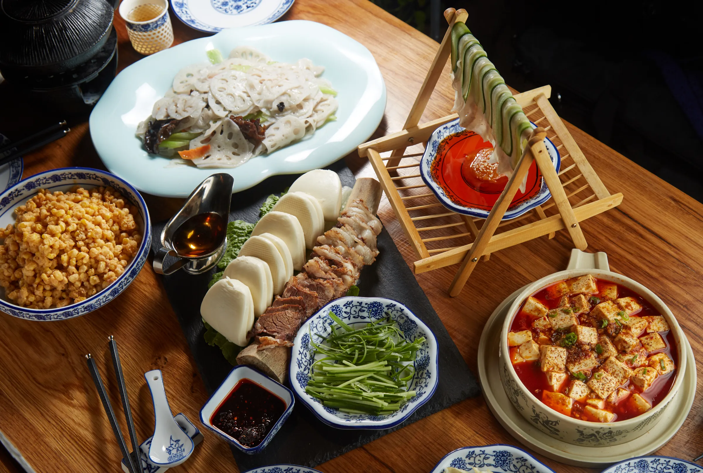